set.seed(123) # good practice to set a random seed, or else different runs get you different resultsInference_simulations
Tips before getting started
This is a document made to accompany some simulations from the Inference lecture in Psych 201a. The goal of this document is to continue learning in R/tidyverse but also to gain hands on experience simulating and manipulating data.
If you need to install something, you can run install.packages('tidyverse'), where you substitute the name of the library
You should have this repository cloned on your computer, ideally in a folder where you have all of your github repositories (e.g., /brialong/Documents/GitHub/in_class_excercises\)
To understand what a function does, type ? [function_name] where function_name refers to a function name in a loaded repository.
Setup
Import the functions & data that we need
library(tidyverse)── Attaching core tidyverse packages ──────────────────────── tidyverse 2.0.0 ──
✔ dplyr 1.1.4 ✔ readr 2.1.5
✔ forcats 1.0.0 ✔ stringr 1.5.1
✔ ggplot2 3.5.1 ✔ tibble 3.2.1
✔ lubridate 1.9.3 ✔ tidyr 1.3.1
✔ purrr 1.0.2
── Conflicts ────────────────────────────────────────── tidyverse_conflicts() ──
✖ dplyr::filter() masks stats::filter()
✖ dplyr::lag() masks stats::lag()
ℹ Use the conflicted package (<http://conflicted.r-lib.org/>) to force all conflicts to become errorslibrary(ggplot2) # plotting
library(ggthemes) # optional, but niceDefine the simulation function
This makes “tea data”, a tibble (dataframe) where there are a certain number of people in each condition (default = 48, i.e., n_total, with n_total/2 in each half)
The averages of the two conditions are separated by a known effect (“delta”) with some variance (“sigma”). You can change these around since we’re simulating data!
make_tea_data <- function(n_total = 48, sigma = 1.25, delta = 1.5) {
n_half <- n_total / 2
tibble(condition = c(rep("milk first", n_half), rep("tea first", n_half)),
rating = c(round(rnorm(n_half, mean = 3.5 + delta, sd = sigma)),
round(rnorm(n_half, mean = 3.5, sd = sigma)))) |>
mutate(rating = if_else(rating > 10, 10, rating), # truncate if greater than max/min of rating scale
rating = if_else(rating < 1, 1, rating))
}Make data frames where we have small or larger samples of tea data for ONE experiment
# here's, we're calling our custom functino, and specifying different inputs than the defaults (which are inside the parenthese up above)
tea_data <- make_tea_data(n_total = 18, delta=1.5)tea_data_highn <- make_tea_data(n_total = 48, delta=1.5)To do: OK, look at these data frames. How long are they, what are the column names? Look at them in your console and in the environment if you want.
To do: Write basic tidyverse code to calculate the mean of each condition (hint: use group_by and summarize)
by_condition <- tea_data |>
group_by('condition') |>
summarize(mean_rating = mean(rating), num_participants = length(rating))
by_condition_highn <- tea_data |>
group_by('condition') |>
summarize(mean_rating = mean(rating), num_participants = length(rating))In this first draw, was it significant with N=9 or N=24 per group?
OK, we can do t-tests already! I’ve done these within a pipe (whoops, I often use the old pipe operator because I have small hands)
To do: Run these and look at the outputs by posting out_low_n in the console
out_low_n <- tea_data %>%
t.test(rating ~ condition, data = ., var.equal = TRUE)
out_high_n <- tea_data_highn %>%
t.test(rating ~ condition, data = ., var.equal = TRUE) Simulate 1000 experiments
To do: Run these code blocks
…where you have 18 participants per experiment with an average difference of 1.5 points in tea deliciousness on average
samps <- tibble(sim = 1:1000) |> #
mutate(data = map(sim, \(i) make_tea_data(n_total = 18, delta=1.5))) |> # simulate
unnest(cols = data) # wrangle…where you have 48 participants per experiment
samps_highn <- tibble(sim = 1:1000) |> #
mutate(data = map(sim, \(i) make_tea_data(n_total = 48, delta=1.5))) |> # simulate
unnest(cols = data) # wrangleSummarize both of these simulations
To do: Run these code blocks Do you understand what each line is doing here? (the map function above is hard, just focus here?)
tea_data_summary <- samps |>
group_by(sim, condition) |> # group by simulation #, and condition
summarise(mean_rating = mean(rating)) |> # summarize across ratings
group_by(sim) |> # now get difference
summarise(delta = mean_rating[condition == "milk first"] -
mean_rating[condition == "tea first"])`summarise()` has grouped output by 'sim'. You can override using the `.groups`
argument.tea_data_highn_summary <- samps_highn |>
group_by(sim, condition) |> # group by simulation #, and condition
summarise(mean_rating = mean(rating)) |> # summarize across ratings
group_by(sim) |> # now get difference
summarise(delta = mean_rating[condition == "milk first"] -
mean_rating[condition == "tea first"])`summarise()` has grouped output by 'sim'. You can override using the `.groups`
argument.Plot difference for low-n
Let’s make a plot to plot the differences in ratings across conditions To do: run these code blocks
ggplot(data=tea_data_summary, aes(x=delta)) +
geom_histogram(alpha=.8, bins=20) +
theme_few()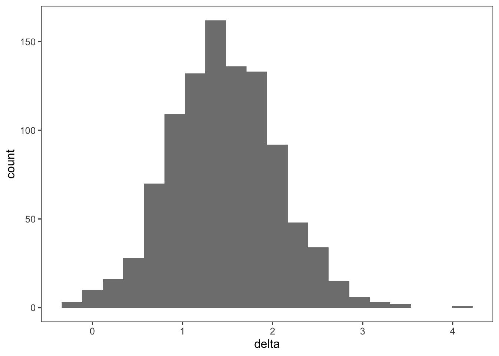
Or simply
hist(tea_data_summary$delta)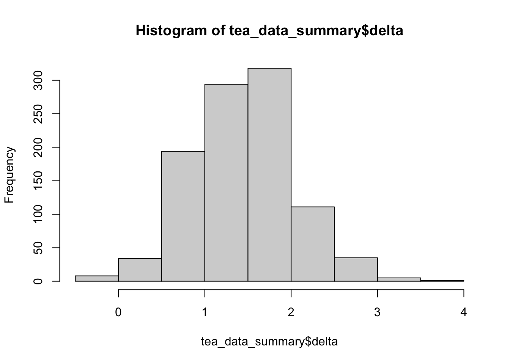
Plot difference for higher-n
To do: What’s different about this distribution vs the one we just plotted?
ggplot(data=tea_data_highn_summary, aes(x=delta)) +
geom_histogram(alpha=.8, bins=20) +
theme_few()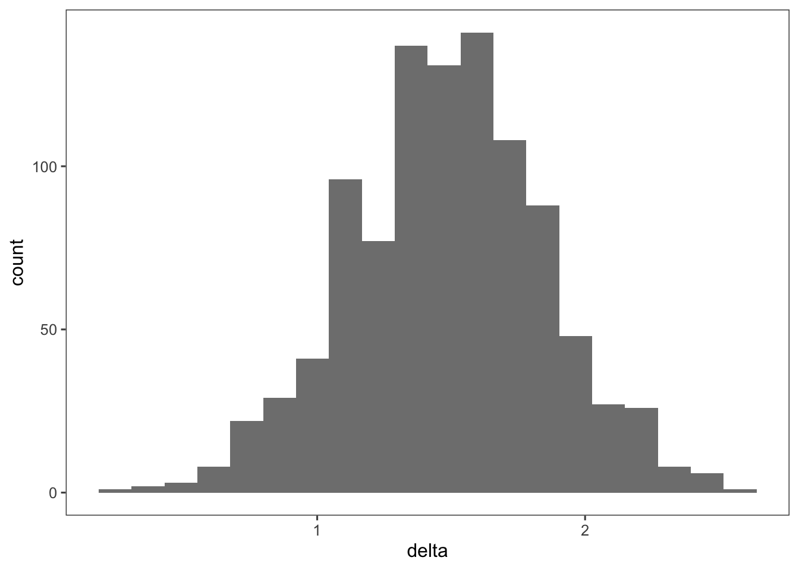
Bonus What happens if you run it again? Try varying the variance / mean of the effect when you change the “delta” and “sigma” values?
What happens if you vary the random seed?
Now let’s visualize what would happen under the null distribution in two ways
First, by simulating no differences between conditions. Remember, it’s the null model because DELTA (i.e., differences in conditions) is ZERO
To do: Where in the function is it specifying that there is no difference between conditions?
null_model <- tibble(sim = 1:1000) |>
mutate(data = map(sim, \(i) make_tea_data(n_total = 18, delta = 0))) |>
unnest(cols = data)
null_model_summary <- null_model |>
group_by(sim, condition) |>
summarise(mean_rating = mean(rating)) |>
group_by(sim) |>
summarise(delta = mean_rating[condition == "milk first"] -
mean_rating[condition == "tea first"])`summarise()` has grouped output by 'sim'. You can override using the `.groups`
argument.To do: Explain what does this data look like and why
ggplot(data=null_model_summary, aes(x=delta)) +
geom_histogram(alpha=.8, bins=20) +
theme_few()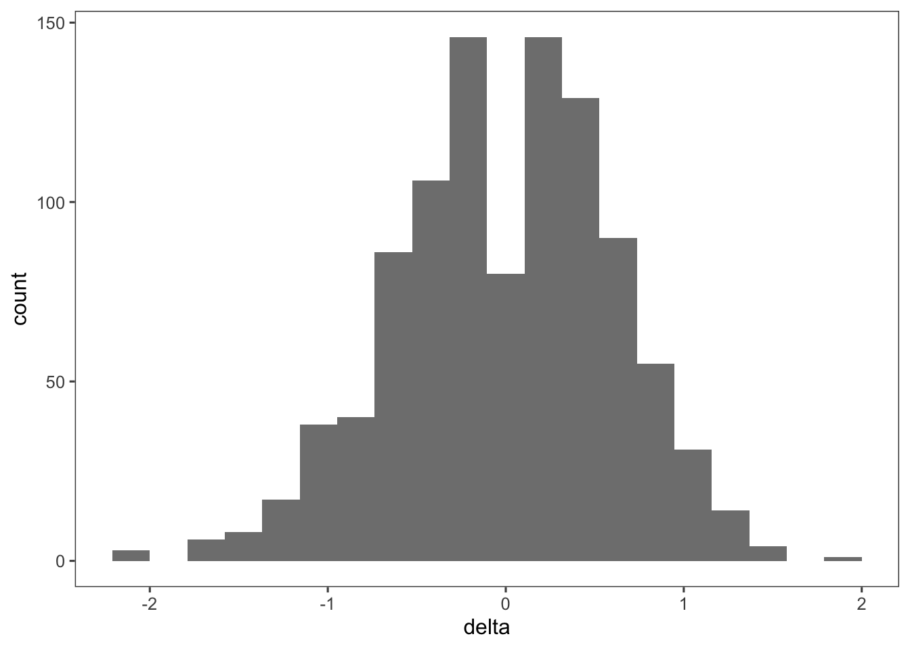
Permutations
We’re going to calculate the distribution of the difference between conditions when we’ve shuffled the condition labels
This is the empirical null hypothesis (our H0, since we’re comparing two conditions with a two-sample t-test)
First, let’s shuffle the labels ~within each experiment~
tea_data_highn_shuffled <- samps_highn %>%
group_by(sim) %>% # for each experiment
mutate(condition_shuffled = sample(condition)) # shuffle the condition labelsTo do: check you understanding – what is “sim” here?
tea_data_highn_shuffled_summary <- tea_data_highn_shuffled %>%
group_by(condition_shuffled, sim) %>%
summarize(mean = mean(rating),
sd = sd(rating)) %>%
ungroup() %>%
summarize(delta = diff(mean)) # get the difference in ratings between conditions for each experimental draw`summarise()` has grouped output by 'condition_shuffled'. You can override
using the `.groups` argument.Warning: Returning more (or less) than 1 row per `summarise()` group was deprecated in
dplyr 1.1.0.
ℹ Please use `reframe()` instead.
ℹ When switching from `summarise()` to `reframe()`, remember that `reframe()`
always returns an ungrouped data frame and adjust accordingly.To do: what does this histogram look like and why?
hist(tea_data_highn_shuffled_summary$delta) #what does this histogram look like?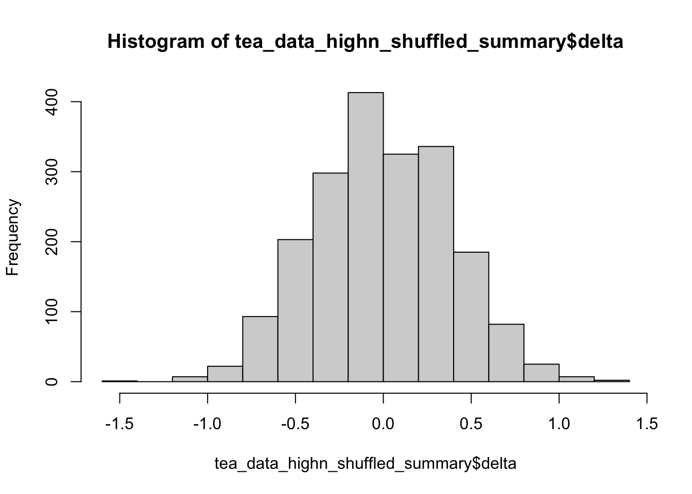
Visualizing what happens when we shuffle
OK, now see what happens to our raw data – this is just from one simulation The color refers to the ORIGINAL label before we shuffled, but our condition difference is gone
(Try replotting it so the colors refer to the condition_shuffled, modifying line 176)
ggplot(data = tea_data_highn_shuffled %>% filter(sim==3), # can change the actual simulation number here
mapping = aes(x = condition_shuffled, y = rating))+
geom_point(mapping = aes(color = condition), # color
alpha=.8,
position = position_jitter(height = .1,
width = 0.1)) +
stat_summary(fun.data = mean_cl_boot, # this boostraps the confidence interval
geom = "linerange",
size = 1) +
stat_summary(fun = "mean", # this calculates the average
geom = "point",
shape = 21,
color = "black",
fill = "white") +
scale_y_continuous(breaks = 0:10,
labels = 0:10,
limits = c(0, 10))Warning: Using `size` aesthetic for lines was deprecated in ggplot2 3.4.0.
ℹ Please use `linewidth` instead.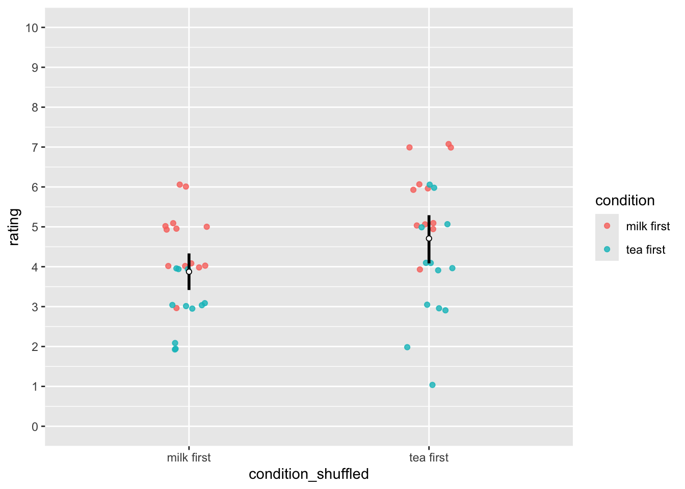
The idea is now that we can get a sampling distribution of the difference in the means between the two conditions (assuming that the null hypothesis were true), by randomly shuffling the labels and calculating the difference in means (and doing this many times). What we get is a distribution of the differences we would expect, if there was no effect of condition.
First calculate the actual difference in a simulated dataset
difference_actual = tea_data_highn %>% # in ONE experiment
group_by(condition) %>%
summarize(mean = mean(rating)) %>%
pull(mean) %>%
diff()#plot the distribution of the differences
ggplot(data = tea_data_highn_shuffled_summary, aes(x=delta)) +
geom_histogram(aes(y = stat(density)),
color = "black",
fill = "lightblue",
binwidth = 0.05) +
stat_density(geom = "line",
size = 1.5,
bw = 0.2) +
geom_vline(xintercept = difference_actual, color = "red", size = 2) +
labs(x = "difference between means") Warning: `stat(density)` was deprecated in ggplot2 3.4.0.
ℹ Please use `after_stat(density)` instead.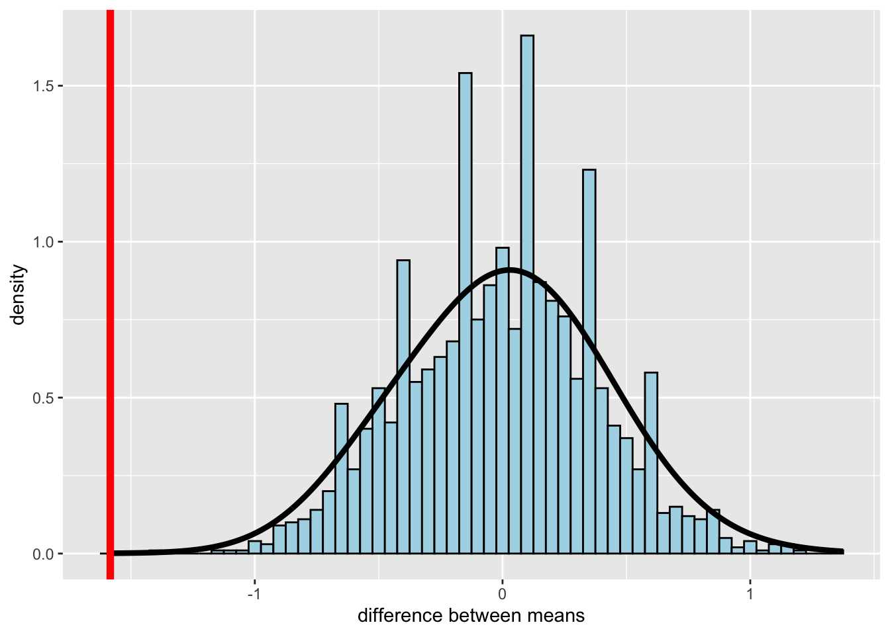
And we can then simply calculate the p-value by using some basic data wrangling (i.e. finding the proportion of differences that were as or more extreme than the one we observed).
tea_data_highn_shuffled_summary %>%
summarize(p_value = sum(delta <= difference_actual)/n())# A tibble: 1 × 1
p_value
<dbl>
1 0You can also see this if you plot the distributions of the null vs empirical simulations next to each other (blue = null)
ggplot(data=tea_data_highn_shuffled_summary, aes(x=delta)) +
geom_histogram(alpha=.4, bins=20, color='blue', fill='blue') +
geom_histogram(alpha=.8, bins=20, data=tea_data_highn_summary)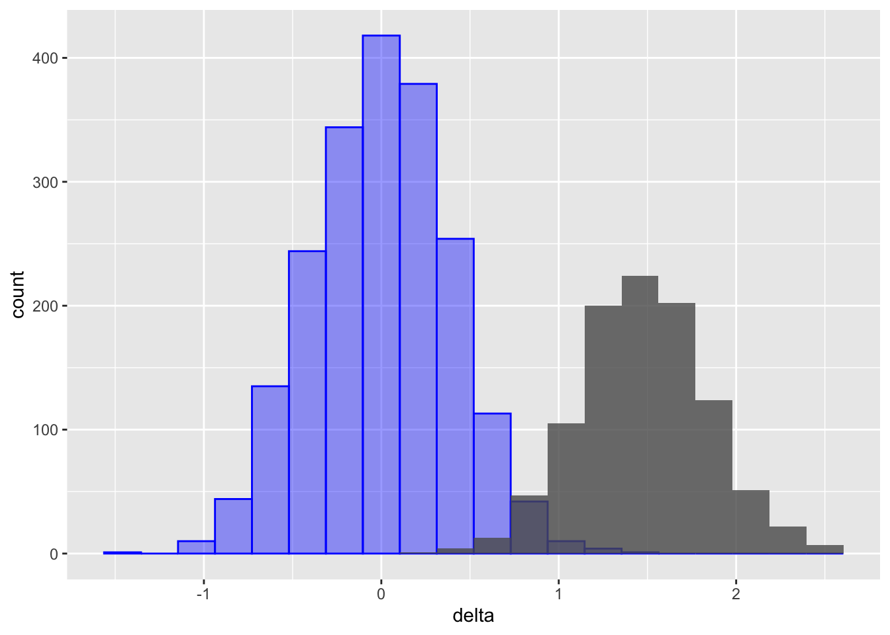
theme_few()List of 136
$ line :List of 6
..$ colour : chr "#4D4D4D"
..$ linewidth : num 0.545
..$ linetype : num 1
..$ lineend : chr "butt"
..$ arrow : logi FALSE
..$ inherit.blank: logi FALSE
..- attr(*, "class")= chr [1:2] "element_line" "element"
$ rect :List of 5
..$ fill : chr "white"
..$ colour : logi NA
..$ linewidth : num 0.545
..$ linetype : num 1
..$ inherit.blank: logi FALSE
..- attr(*, "class")= chr [1:2] "element_rect" "element"
$ text :List of 11
..$ family : chr ""
..$ face : chr "plain"
..$ colour : chr "#000000"
..$ size : num 12
..$ hjust : num 0.5
..$ vjust : num 0.5
..$ angle : num 0
..$ lineheight : num 0.9
..$ margin : 'margin' num [1:4] 0points 0points 0points 0points
.. ..- attr(*, "unit")= int 8
..$ debug : logi FALSE
..$ inherit.blank: logi FALSE
..- attr(*, "class")= chr [1:2] "element_text" "element"
$ title : NULL
$ aspect.ratio : NULL
$ axis.title : NULL
$ axis.title.x :List of 11
..$ family : NULL
..$ face : NULL
..$ colour : NULL
..$ size : NULL
..$ hjust : NULL
..$ vjust : num 1
..$ angle : NULL
..$ lineheight : NULL
..$ margin : 'margin' num [1:4] 3points 0points 0points 0points
.. ..- attr(*, "unit")= int 8
..$ debug : NULL
..$ inherit.blank: logi TRUE
..- attr(*, "class")= chr [1:2] "element_text" "element"
$ axis.title.x.top :List of 11
..$ family : NULL
..$ face : NULL
..$ colour : NULL
..$ size : NULL
..$ hjust : NULL
..$ vjust : num 0
..$ angle : NULL
..$ lineheight : NULL
..$ margin : 'margin' num [1:4] 0points 0points 3points 0points
.. ..- attr(*, "unit")= int 8
..$ debug : NULL
..$ inherit.blank: logi TRUE
..- attr(*, "class")= chr [1:2] "element_text" "element"
$ axis.title.x.bottom : NULL
$ axis.title.y :List of 11
..$ family : NULL
..$ face : NULL
..$ colour : NULL
..$ size : NULL
..$ hjust : NULL
..$ vjust : num 1
..$ angle : num 90
..$ lineheight : NULL
..$ margin : 'margin' num [1:4] 0points 3points 0points 0points
.. ..- attr(*, "unit")= int 8
..$ debug : NULL
..$ inherit.blank: logi TRUE
..- attr(*, "class")= chr [1:2] "element_text" "element"
$ axis.title.y.left : NULL
$ axis.title.y.right :List of 11
..$ family : NULL
..$ face : NULL
..$ colour : NULL
..$ size : NULL
..$ hjust : NULL
..$ vjust : num 1
..$ angle : num -90
..$ lineheight : NULL
..$ margin : 'margin' num [1:4] 0points 0points 0points 3points
.. ..- attr(*, "unit")= int 8
..$ debug : NULL
..$ inherit.blank: logi TRUE
..- attr(*, "class")= chr [1:2] "element_text" "element"
$ axis.text :List of 11
..$ family : NULL
..$ face : NULL
..$ colour : chr "grey30"
..$ size : 'rel' num 0.8
..$ hjust : NULL
..$ vjust : NULL
..$ angle : NULL
..$ lineheight : NULL
..$ margin : NULL
..$ debug : NULL
..$ inherit.blank: logi TRUE
..- attr(*, "class")= chr [1:2] "element_text" "element"
$ axis.text.x :List of 11
..$ family : NULL
..$ face : NULL
..$ colour : NULL
..$ size : NULL
..$ hjust : NULL
..$ vjust : num 1
..$ angle : NULL
..$ lineheight : NULL
..$ margin : 'margin' num [1:4] 2.4points 0points 0points 0points
.. ..- attr(*, "unit")= int 8
..$ debug : NULL
..$ inherit.blank: logi TRUE
..- attr(*, "class")= chr [1:2] "element_text" "element"
$ axis.text.x.top :List of 11
..$ family : NULL
..$ face : NULL
..$ colour : NULL
..$ size : NULL
..$ hjust : NULL
..$ vjust : num 0
..$ angle : NULL
..$ lineheight : NULL
..$ margin : 'margin' num [1:4] 0points 0points 2.4points 0points
.. ..- attr(*, "unit")= int 8
..$ debug : NULL
..$ inherit.blank: logi TRUE
..- attr(*, "class")= chr [1:2] "element_text" "element"
$ axis.text.x.bottom : NULL
$ axis.text.y :List of 11
..$ family : NULL
..$ face : NULL
..$ colour : NULL
..$ size : NULL
..$ hjust : num 1
..$ vjust : NULL
..$ angle : NULL
..$ lineheight : NULL
..$ margin : 'margin' num [1:4] 0points 2.4points 0points 0points
.. ..- attr(*, "unit")= int 8
..$ debug : NULL
..$ inherit.blank: logi TRUE
..- attr(*, "class")= chr [1:2] "element_text" "element"
$ axis.text.y.left : NULL
$ axis.text.y.right :List of 11
..$ family : NULL
..$ face : NULL
..$ colour : NULL
..$ size : NULL
..$ hjust : num 0
..$ vjust : NULL
..$ angle : NULL
..$ lineheight : NULL
..$ margin : 'margin' num [1:4] 0points 0points 0points 2.4points
.. ..- attr(*, "unit")= int 8
..$ debug : NULL
..$ inherit.blank: logi TRUE
..- attr(*, "class")= chr [1:2] "element_text" "element"
$ axis.text.theta : NULL
$ axis.text.r :List of 11
..$ family : NULL
..$ face : NULL
..$ colour : NULL
..$ size : NULL
..$ hjust : num 0.5
..$ vjust : NULL
..$ angle : NULL
..$ lineheight : NULL
..$ margin : 'margin' num [1:4] 0points 2.4points 0points 2.4points
.. ..- attr(*, "unit")= int 8
..$ debug : NULL
..$ inherit.blank: logi TRUE
..- attr(*, "class")= chr [1:2] "element_text" "element"
$ axis.ticks :List of 6
..$ colour : chr "#4D4D4D"
..$ linewidth : NULL
..$ linetype : NULL
..$ lineend : NULL
..$ arrow : logi FALSE
..$ inherit.blank: logi FALSE
..- attr(*, "class")= chr [1:2] "element_line" "element"
$ axis.ticks.x : NULL
$ axis.ticks.x.top : NULL
$ axis.ticks.x.bottom : NULL
$ axis.ticks.y : NULL
$ axis.ticks.y.left : NULL
$ axis.ticks.y.right : NULL
$ axis.ticks.theta : NULL
$ axis.ticks.r : NULL
$ axis.minor.ticks.x.top : NULL
$ axis.minor.ticks.x.bottom : NULL
$ axis.minor.ticks.y.left : NULL
$ axis.minor.ticks.y.right : NULL
$ axis.minor.ticks.theta : NULL
$ axis.minor.ticks.r : NULL
$ axis.ticks.length : 'simpleUnit' num 3points
..- attr(*, "unit")= int 8
$ axis.ticks.length.x : NULL
$ axis.ticks.length.x.top : NULL
$ axis.ticks.length.x.bottom : NULL
$ axis.ticks.length.y : NULL
$ axis.ticks.length.y.left : NULL
$ axis.ticks.length.y.right : NULL
$ axis.ticks.length.theta : NULL
$ axis.ticks.length.r : NULL
$ axis.minor.ticks.length : 'rel' num 0.75
$ axis.minor.ticks.length.x : NULL
$ axis.minor.ticks.length.x.top : NULL
$ axis.minor.ticks.length.x.bottom: NULL
$ axis.minor.ticks.length.y : NULL
$ axis.minor.ticks.length.y.left : NULL
$ axis.minor.ticks.length.y.right : NULL
$ axis.minor.ticks.length.theta : NULL
$ axis.minor.ticks.length.r : NULL
$ axis.line : list()
..- attr(*, "class")= chr [1:2] "element_blank" "element"
$ axis.line.x : NULL
$ axis.line.x.top : NULL
$ axis.line.x.bottom : NULL
$ axis.line.y : NULL
$ axis.line.y.left : NULL
$ axis.line.y.right : NULL
$ axis.line.theta : NULL
$ axis.line.r : NULL
$ legend.background :List of 5
..$ fill : NULL
..$ colour : logi NA
..$ linewidth : NULL
..$ linetype : NULL
..$ inherit.blank: logi TRUE
..- attr(*, "class")= chr [1:2] "element_rect" "element"
$ legend.margin : 'margin' num [1:4] 6points 6points 6points 6points
..- attr(*, "unit")= int 8
$ legend.spacing : 'simpleUnit' num 12points
..- attr(*, "unit")= int 8
$ legend.spacing.x : NULL
$ legend.spacing.y : NULL
$ legend.key :List of 5
..$ fill : NULL
..$ colour : logi NA
..$ linewidth : NULL
..$ linetype : NULL
..$ inherit.blank: logi FALSE
..- attr(*, "class")= chr [1:2] "element_rect" "element"
$ legend.key.size : 'simpleUnit' num 1.2lines
..- attr(*, "unit")= int 3
$ legend.key.height : NULL
$ legend.key.width : NULL
$ legend.key.spacing : 'simpleUnit' num 6points
..- attr(*, "unit")= int 8
$ legend.key.spacing.x : NULL
$ legend.key.spacing.y : NULL
$ legend.frame : NULL
$ legend.ticks : NULL
$ legend.ticks.length : 'rel' num 0.2
$ legend.axis.line : NULL
$ legend.text :List of 11
..$ family : NULL
..$ face : NULL
..$ colour : NULL
..$ size : 'rel' num 0.8
..$ hjust : NULL
..$ vjust : NULL
..$ angle : NULL
..$ lineheight : NULL
..$ margin : NULL
..$ debug : NULL
..$ inherit.blank: logi TRUE
..- attr(*, "class")= chr [1:2] "element_text" "element"
$ legend.text.position : NULL
$ legend.title :List of 11
..$ family : NULL
..$ face : NULL
..$ colour : NULL
..$ size : NULL
..$ hjust : num 0
..$ vjust : NULL
..$ angle : NULL
..$ lineheight : NULL
..$ margin : NULL
..$ debug : NULL
..$ inherit.blank: logi TRUE
..- attr(*, "class")= chr [1:2] "element_text" "element"
$ legend.title.position : NULL
$ legend.position : chr "right"
$ legend.position.inside : NULL
$ legend.direction : NULL
$ legend.byrow : NULL
$ legend.justification : chr "center"
$ legend.justification.top : NULL
$ legend.justification.bottom : NULL
$ legend.justification.left : NULL
$ legend.justification.right : NULL
$ legend.justification.inside : NULL
$ legend.location : NULL
$ legend.box : NULL
$ legend.box.just : NULL
$ legend.box.margin : 'margin' num [1:4] 0cm 0cm 0cm 0cm
..- attr(*, "unit")= int 1
$ legend.box.background : list()
..- attr(*, "class")= chr [1:2] "element_blank" "element"
$ legend.box.spacing : 'simpleUnit' num 12points
..- attr(*, "unit")= int 8
[list output truncated]
- attr(*, "class")= chr [1:2] "theme" "gg"
- attr(*, "complete")= logi TRUE
- attr(*, "validate")= logi TRUEConfidence intervals
Done here with one experiment, you can choose which is “tea_dataset”
# tea_dataset = tea_data
tea_dataset = tea_data_highntea_ratings <- filter(tea_dataset, condition == "tea first")$rating
milk_ratings <- filter(tea_dataset, condition == "milk first")$rating
# could also do in a pipe like so, but then you have to grab the column below, as in tea_ratings$ratings; above is a vector
# tea_ratings <- tea_data_highn %>%
# filter(condition=="tea first") %>%
# select(rating)Calculate a CI on the effect (difference between conditions)
Uses a pooled standard deviation We’re using the normal distribution here to calculate CIs since we know the population SD follows a normal
Note that this is different than the CI calculated by the two-sample t-tests, where
n_tea <- length(tea_ratings)
n_milk <- length(milk_ratings)
sd_tea <- sd(tea_ratings)
sd_milk <- sd(milk_ratings)
tea_sd_pooled <- sqrt(((n_tea - 1) * sd_tea ^ 2 + (n_milk - 1) * sd_milk ^ 2) /
(n_tea + n_milk - 2))
tea_se <- tea_sd_pooled * sqrt((1 / n_tea) + (1 / n_milk))
delta_hat <- mean(milk_ratings) - mean(tea_ratings)
tea_ci_lower <- delta_hat - tea_se * qnorm(0.975)
tea_ci_upper <- delta_hat + tea_se * qnorm(0.975)To get the 95% CI with the t-distribution
You need to get the appropriate t-statistic from the distribution, which incorporates information about the degrees of freedom
The t-distribution is more appropriate when you have smaller sample sizes and is what is used in t.tests
num_observations = length(tea_dataset$rating)
df = num_observations-2 # for two sample t.test
tea_ci_lower_ttest <- delta_hat - tea_se * qt(0.975,df)
tea_ci_upper_ttest <- delta_hat + tea_se * qt(0.975,df)# Now the calculated CIs match those in the t-test outputs!
t.test(tea_ratings, milk_ratings, var.equal=TRUE)
Two Sample t-test
data: tea_ratings and milk_ratings
t = -5.2133, df = 46, p-value = 4.283e-06
alternative hypothesis: true difference in means is not equal to 0
95 percent confidence interval:
-2.1946718 -0.9719949
sample estimates:
mean of x mean of y
3.458333 5.041667 Going to plot CIs for each condition
as well as SEs, and visualizae how they’re different
confidence_level=.95 # you can change this
# this formula below gives the critical t-value (as opposed to simply taken from the normal distribution)
# qt(1 - (1 - confidence_level)/2, df = n - 1)
tea_data_highn_summary_cis <- tea_data_highn %>%
group_by(condition) %>%
summarize(cond_mean = mean(rating), cond_sd = sd(rating), n=length(rating)) %>%
mutate(error = qt(1 - (1 - confidence_level)/2, df = n - 1)* (cond_sd/sqrt(n))) %>% # this calculates CIs WITHIN each condition
mutate(ci_upper = cond_mean + error, ci_lower = cond_mean - error) %>%
mutate(se_upper = cond_mean + cond_sd/sqrt(n), se_lower = cond_mean - cond_sd/sqrt(n))Between subjects experiment – lots of variability! I like to visualize the raw datas as well as the mean and CIs
ggplot(data = tea_data_highn, aes(x=condition, y=rating, col=condition)) +
geom_jitter(width=.1, height=0, alpha=.3) + # visualizes all the raw data, with no variation in y-axis jitter
theme_few() +
geom_pointrange(data = tea_data_highn_summary_cis, aes(x=condition, y = cond_mean, ymin = ci_lower, ymax = ci_upper)) +
ylim(0,10) +
ggtitle('Tea ratings across conditions with CIs')
ggplot(data = tea_data_highn, aes(x=condition, y=rating, col=condition)) +
geom_jitter(width=.1, height=0, alpha=.5) + # visualizes all the raw data, with no variation in y-axis jitter
theme_few() +
geom_pointrange(data = tea_data_highn_summary_cis, aes(x=condition, y = cond_mean, ymin = se_lower, ymax = se_upper)) +
ylim(0,10) +
ggtitle('Tea ratings across condition with SE')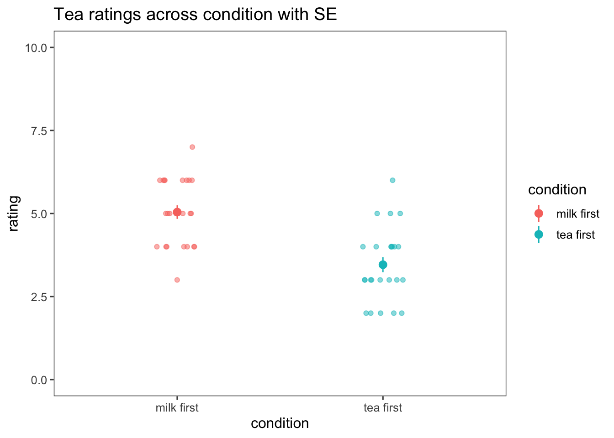
To do: What does each dot represnet? What does the range represent in each graph? What does the confidence interval indicate? What does the SE indicate?
To do: how does this change when you use the low-n experiment?
Simulating p-values across multiple experiments
To do: run this code
First for low-n experiments
all_results=tibble()
for (this_sim in 1:100) {
this_experiment = null_model %>%
filter(sim==this_sim)
tea_ratings <- filter(this_experiment, condition == "tea first")$rating
milk_ratings <- filter(this_experiment, condition == "milk first")$rating
output = t.test(tea_ratings, milk_ratings)
this_exp_output = tibble(pvalue = output$p.value)
all_results = bind_rows(all_results, this_exp_output)
}To do: Look at the distribution of p-values (hint: in all_results$pvalue)
Make a histogram What is the distribution of p-values when the null is true?
Calculate the proportion of p-values that are less than .05 What was our false positive rate?
ggplot(data=all_results, aes(x=pvalue)) +
geom_histogram(alpha=.8, bins=10) +
theme_few()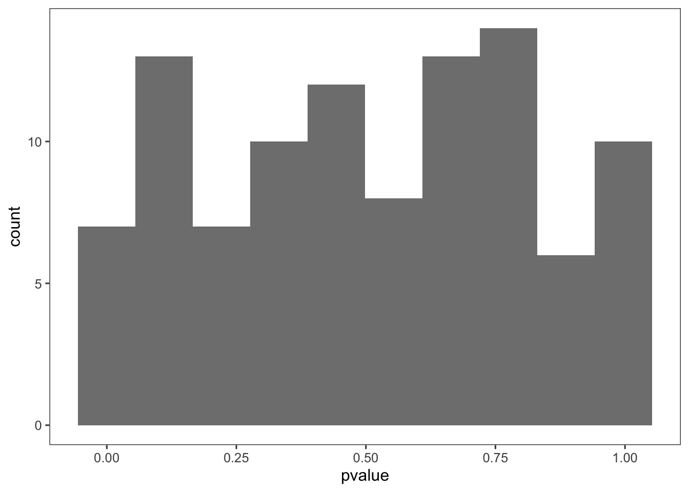
hist(all_results$pvalue)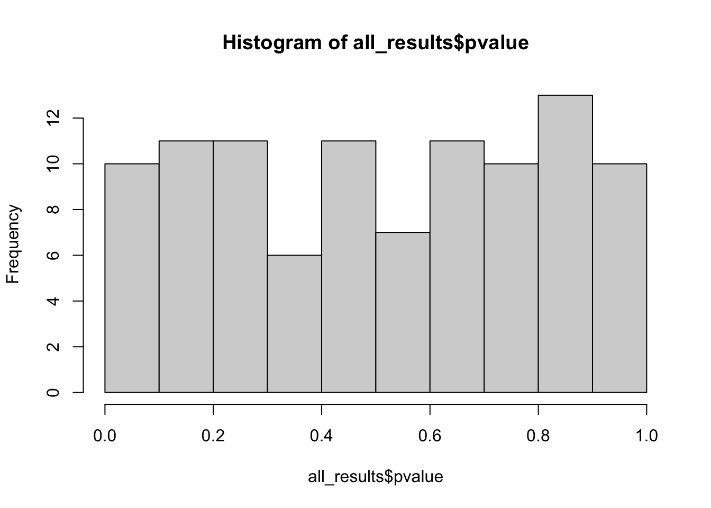
all_results$pvalue<0.05 [1] FALSE FALSE FALSE FALSE FALSE TRUE FALSE TRUE FALSE FALSE FALSE FALSE
[13] FALSE FALSE FALSE FALSE FALSE FALSE FALSE FALSE FALSE FALSE FALSE FALSE
[25] TRUE FALSE FALSE FALSE FALSE FALSE FALSE FALSE FALSE FALSE TRUE FALSE
[37] TRUE FALSE FALSE FALSE FALSE FALSE FALSE FALSE TRUE FALSE FALSE FALSE
[49] FALSE FALSE FALSE FALSE FALSE FALSE FALSE FALSE FALSE FALSE FALSE TRUE
[61] FALSE FALSE FALSE FALSE FALSE FALSE FALSE FALSE FALSE FALSE FALSE FALSE
[73] FALSE FALSE FALSE FALSE FALSE FALSE FALSE FALSE FALSE FALSE FALSE FALSE
[85] FALSE FALSE FALSE FALSE FALSE FALSE FALSE FALSE FALSE FALSE FALSE FALSE
[97] FALSE FALSE FALSE FALSEsum(all_results$pvalue<0.05)[1] 7Now for an experiment when there is actually an effect
all_results_high_n=tibble()
for (this_sim in 1:100) {
this_experiment = samps_highn %>%
filter(sim==this_sim)
tea_ratings <- filter(this_experiment, condition == "tea first")$rating
milk_ratings <- filter(this_experiment, condition == "milk first")$rating
output = t.test(tea_ratings, milk_ratings, paired = FALSE, var.equal = TRUE)
this_exp_output = tibble(pvalue = output$p.value)
all_results_high_n = bind_rows(all_results_high_n, this_exp_output)
}How often did we fail to reject the null hypothesis? When was our p-value greater than p=.05? What does the distribution of p-values look like?
hist(all_results_high_n$pvalue)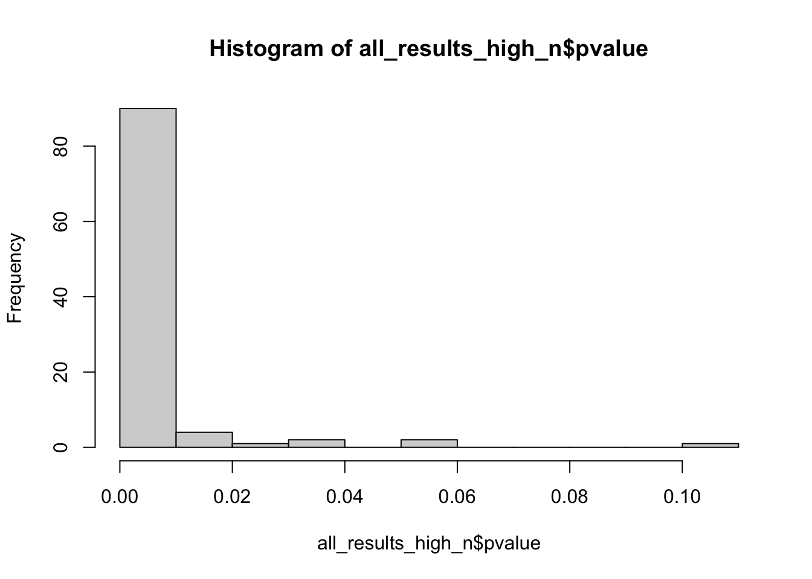
all_results_high_n$pvalue>0.05 [1] FALSE FALSE FALSE FALSE FALSE FALSE FALSE FALSE FALSE FALSE FALSE FALSE
[13] FALSE FALSE FALSE TRUE FALSE FALSE FALSE FALSE FALSE FALSE FALSE FALSE
[25] FALSE FALSE FALSE FALSE FALSE FALSE FALSE FALSE FALSE FALSE FALSE FALSE
[37] TRUE FALSE FALSE FALSE FALSE FALSE FALSE FALSE FALSE FALSE FALSE FALSE
[49] FALSE FALSE FALSE FALSE FALSE FALSE FALSE FALSE FALSE FALSE FALSE FALSE
[61] FALSE FALSE FALSE FALSE FALSE FALSE FALSE FALSE FALSE FALSE FALSE FALSE
[73] FALSE FALSE FALSE FALSE FALSE FALSE FALSE FALSE FALSE FALSE FALSE FALSE
[85] FALSE FALSE FALSE FALSE FALSE FALSE FALSE FALSE FALSE FALSE TRUE FALSE
[97] FALSE FALSE FALSE FALSEsum(all_results$pvalue>0.05)[1] 93To finish up
Publish this to an rpubs (time to set up if you haven’t!)
Excercises
Now go back (earlier in the code) and modify the DELTA in the simulation functions to be smaller so that there is only a small difference between groups. Is it still significant?
Rewrite this code with the the smaller sample size simulations. What changes?
Save out plots to your computer using “ggsave”. You might need to query the function in R
Try some different plotting functions! https://rstudio.github.io/cheatsheets/html/data-visualization.html